🐧 Ubuntu Setup Guide
🎯 Overview
This guide will help you set up Ubuntu 22.04 LTS for ENME480 robotics development. Ubuntu 22.04 is the recommended operating system for ROS 2 Humble and robotics development.
💻 System Requirements
Minimum Requirements
- RAM: 8GB (16GB recommended)
- Storage: 60GB free space (100GB recommended)
- Processor: 64-bit processor (Intel/AMD) or ARM64 (Apple Silicon)
Recommended Setup
- RAM: 16GB or more
- Storage: 256GB SSD
- Processor: Multi-core processor
- Graphics: Dedicated GPU (optional, for simulation)
💻 Choose Your Platform
Step 1: Download UTM
Download UTM from the official website: https://mac.getutm.app
Step 2: Download Ubuntu 22.04 ARM64
Get Ubuntu 22.04 ARM64 (Desktop or Server): https://cdimage.ubuntu.mirror.onlime.sl/ubuntu/daily-live/20220417/
Choose 22.04 LTS 64-bit (ARM).
Step 3: Create New Virtual Machine
Open UTM and you'll see the welcome screen with options to create a new virtual machine, browse the gallery, or access user guides.
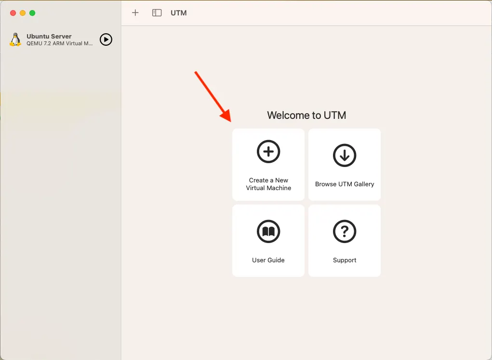
Choose [Virtualize] then [Linux], choose your downloaded iso image file, and click [Continue] with all of the boxes unchecked.
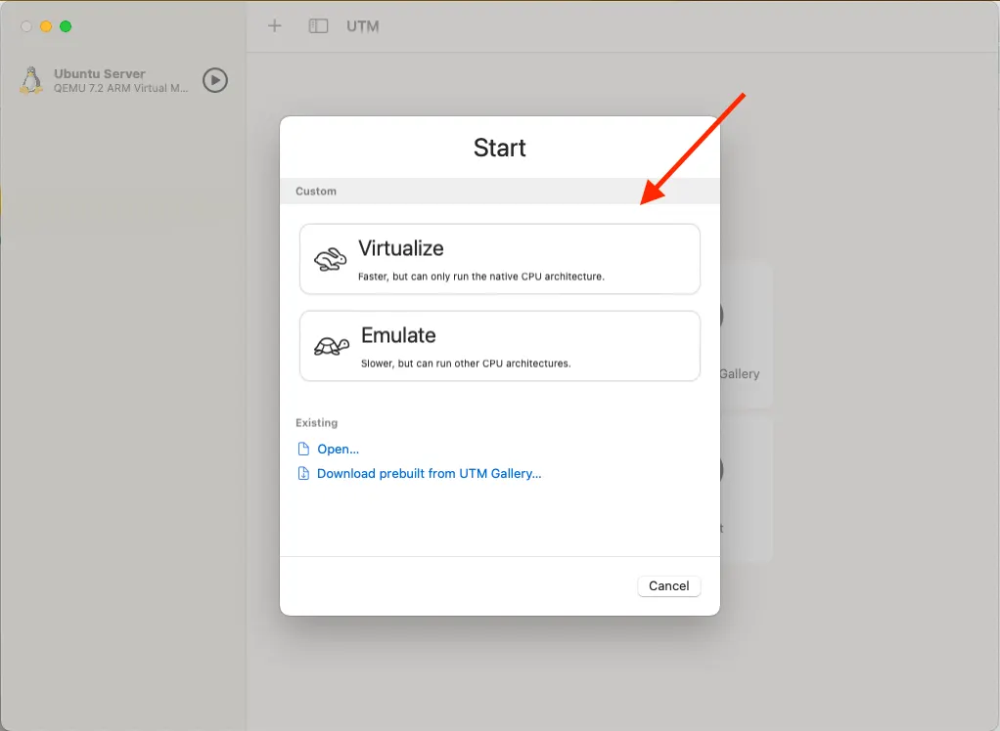
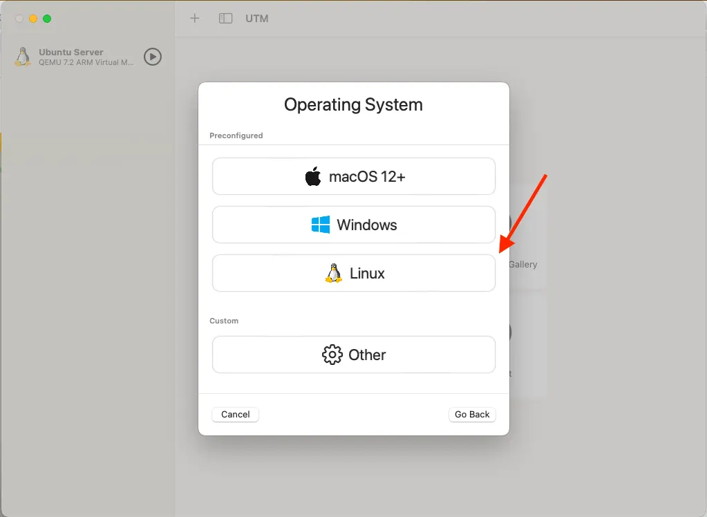
Click on Browse and select the ISO file you downloaded in Step 2

On the next screen, leave the memory at 4096 MB and CPU Cores at [Default]. Then specify the amount of space you want to allocate to the virtual machine. It is recommended that you don’t go below around 30GB. Leaving it at the default 64GB is fine, or allocate a higher number if you prefer. Preferred space is around 50GB
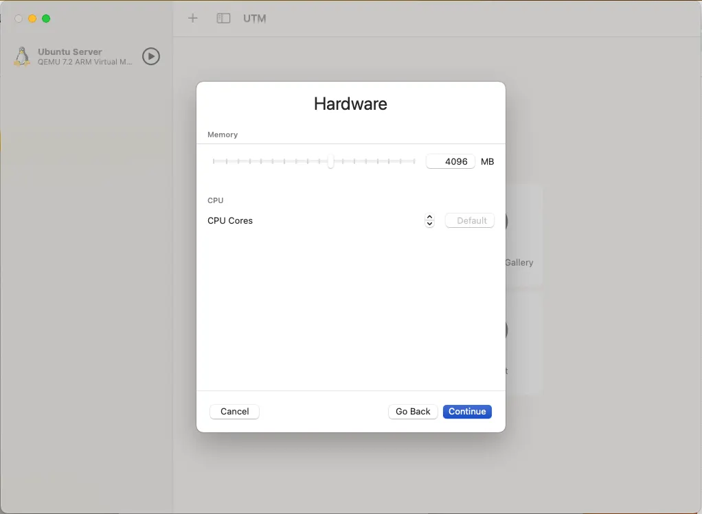

(Optional) Here you can select a storage location for the VM or just leave it as is. This is to configure a shared directory to make files accessible between macOS and your Ubuntu VM. Click "Browse..." to select a folder.
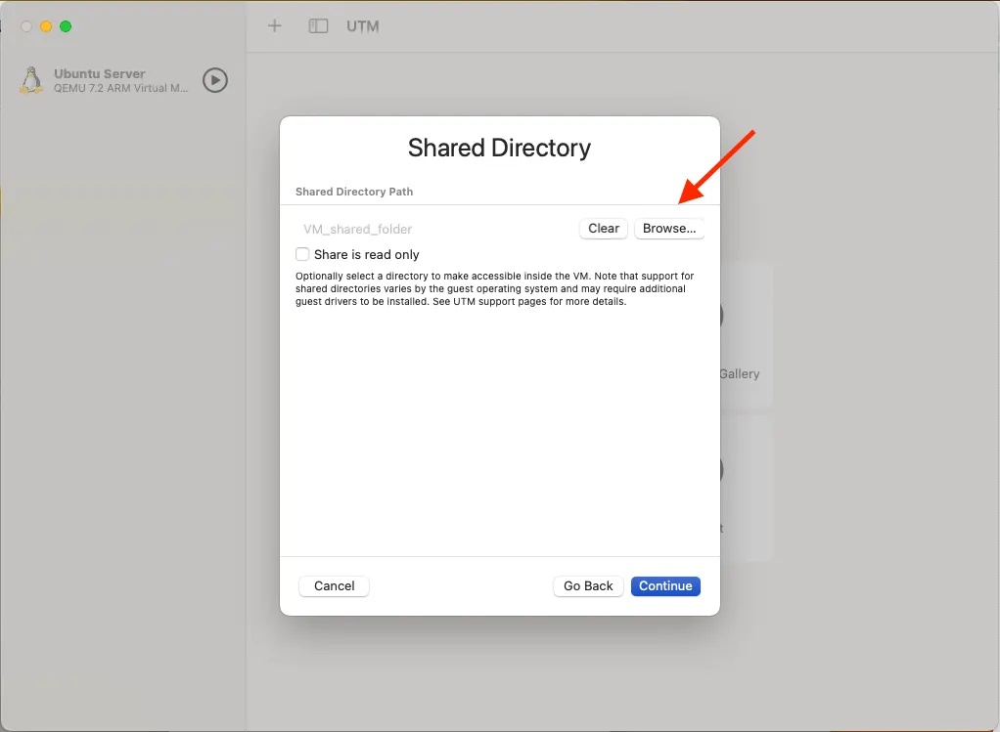
Once done, enter the details for your VM as you want and press done.
Step 4: Start the VM
Click the play button to start your virtual machine. You'll see the GRUB boot menu where you can select "Try or Install Ubuntu".

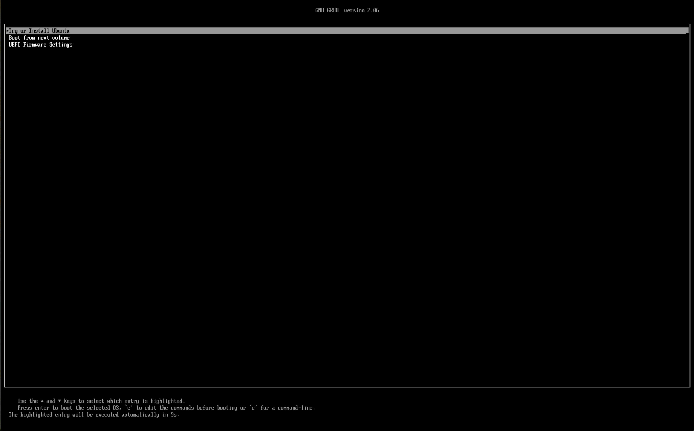
Step 11: Ubuntu Installation Welcome
The below window will be shown and once done, open up "Install Ubuntu 22.04 LTS". The Ubuntu installer will start and show the welcome screen. Select your language and click "Continue".


Choose your keyboard layout. "English (US)" is selected by default. You can test your keyboard in the text field below. (Normally, you can leave it as is and just press continue)
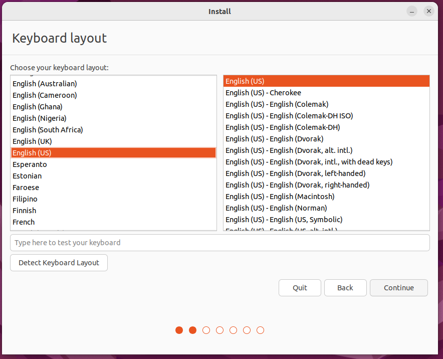
Uncheck the "Download updates while installing" so that you have a faster installation
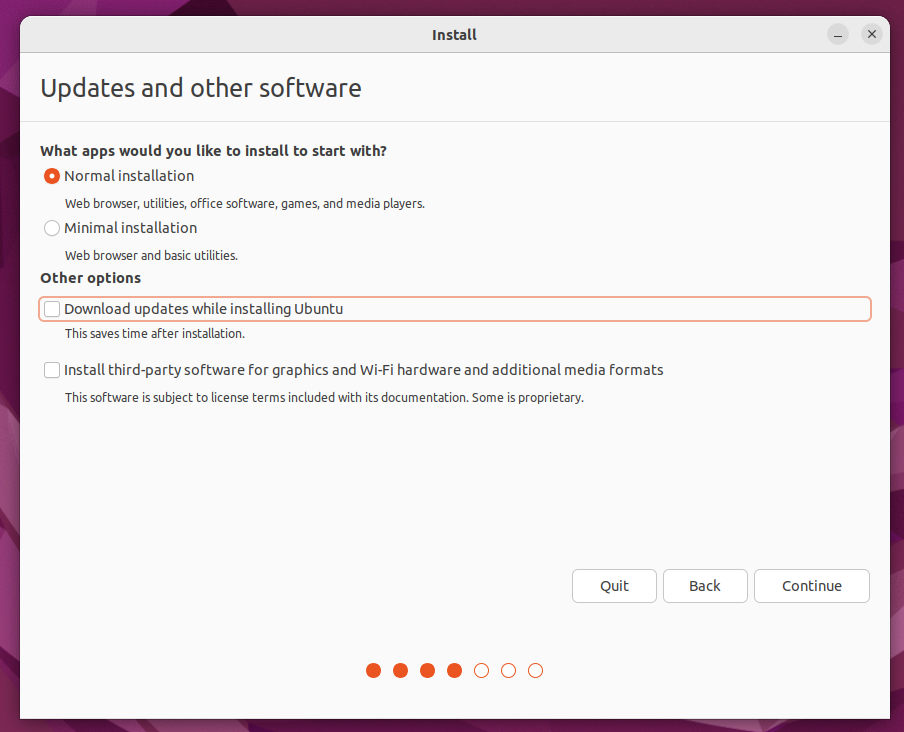
Select "Erase disk and install Ubuntu" since this is a virtual machine. The installer will show a warning about deleting all files.
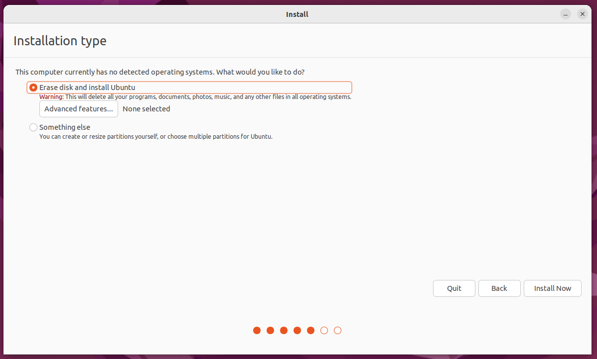

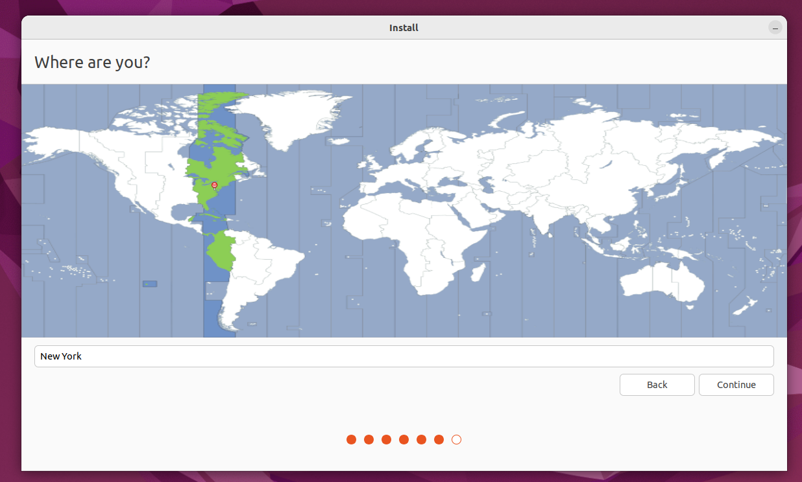
Enter the details you want and press "Continue". The installer will copy files and install Ubuntu. This process may take several minutes depending on your system performance.

Once installation is complete, you'll see the "Installation Complete" screen. Click "Restart Now" to finish the setup.
Step 6: First Boot
After restart, you'll see the Ubuntu login screen. Enter your username and password to log in.
You'll be greeted with the Ubuntu desktop environment with the default jellyfish wallpaper. The dock on the left contains common applications.
References:
- Open Terminal (Win+X → Terminal or search “terminal”).
-
Install Ubuntu 22.04:
This installs the exact distro we use. Using a different Ubuntu version often breaks ROS compatibility.
-
After reboot, you’ll land in the Ubuntu shell (or run
wsl).
Disk space: at least 35 GB free (recommend 50–60 GB). -
First, we will make sure our dependencies are in place. Within WSL2 run:
In order to update all system packages (you may need to enter your password)
sudo install -m 0755 -d /etc/apt/keyrings && curl -fsSL https://download.docker.com/linux/ubuntu/gpg | sudo gpg --dearmor -o /etc/apt/keyrings/docker.gpg && sudo chmod a+r /etc/apt/keyrings/docker.gpg sudo apt update && sudo apt upgrade -y sudo apt install -y apt-transport-https ca-certificates curl software-properties-common curl -fsSL https://download.docker.com/linux/ubuntu/gpg | sudo gpg --dearmor -o /usr/share/keyrings/docker-archive-keyring.gpg echo "deb [signed-by=/usr/share/keyrings/docker-archive-keyring.gpg] https://download.docker.com/linux/ubuntu $(lsb_release -cs) stable" | sudo tee /etc/apt/sources.list.d/docker.list > /dev/null sudo apt updateThese commands set up package registries within WSL, which is how Ubuntu knows where to look for packages (apps) we want to install. If you'd like a more detailed breakdown of what each command here does, feel free to ask a TA.
sudo apt install -y docker-ce docker-ce-cli containerd.io docker-buildx-plugin docker-compose-plugin git python-is-python3 dockerThis command will install docker (which we use to standarize everyones ROS installation), git (which we use to sync code across computers) and remaps the name "python3" to "python" to make Ubuntu happier when running our code.
-
Now, we will download the code from GitHub. To do this, run:
To move to the right folder and download the GitHub repo containing the docker image we need.
-
With that done, we need to make sure the user groups are set up to allow us to compile and run docker images. Run:
So that you are able to build and run docker images. These commands make a gruop who can manage docker images, then add you to it, then resets part of Ubuntu so it recognizes the new group. Once this is done, all the parts are in place to build our docker image.
-
Now, we will build our image.
cd ~/ENME480_mrc/docker && userid=$(id -u) groupid=$(id -g) docker compose -f humble-enme480_ur3e-nvidia-compose.yml buildThe first part of this command (before the &&) puts you in the folder containing the docker image we want to build, while the second part actually builds our image. This step can take a while, since you have to download a lot of data. If you get a permission error at this step try restarting wsl.
Ubuntu 22.04 LTS native install is fine if you prefer dual-boot. Ensure disk space ≥ 60 GB.
⚙️ Post-Installation Setup
Open up Terminal using Ctrl + Alt + T or from the menu on the bottom left and selecting it.
Step 1: Update System
Step 2: Install Essential Tools
# Development tools
sudo apt install build-essential cmake git curl wget
# Python tools
sudo apt install python3-pip python3-venv
# Text editors
sudo apt install code # VS Code
sudo apt install gedit # Simple text editor
# Docker
sudo snap install docker
Step 3: Configure Python
# Make sure you can call python via 'python' instead of 'python3'
sudo apt install python-is-python3
# Install common packages
pip install numpy matplotlib scipy
Step 4: Configure Docker to Run as Non-Root User
If you want to run Docker as a non-root user, then you need to add your user to the docker group.
Create the docker group if it does not exist:
Add your user to the docker group: Log in to the new docker group (to avoid having to log out and log in again; but if not enough, try to reboot): Check if Docker can be run without root: Reboot if you still get an error:ENME480 Docker Installation
Step 1: Clone the Repo
Open up MRC's ENME480 GitHub Repo. You can either download the zip or open up your terminal
This will download the repository content into your HOME directory. Next, build Docker image (run the command from the docker folder). This needs to be done every time the Docker file is changed. Here's the commands to do that:
For MacOS users, change Line no. 4 in the docker file humble-enme480_ur3e.Dockerfile
# BEFORE
FROM osrf/ros:humble-desktop AS humble-mod_desktop
# AFTER
FROM arm64v8/ros:humble AS humble-mod_desktop
Step 2: Build and Run the Docker
For Everyone, run
cd ~/ENME480_mrc/docker/
userid=$(id -u) groupid=$(id -g) docker compose -f humble-enme480_ur3e-nvidia-compose.yml build
Once it is successfully built, run the container
Step 3 (OPTIONAL): Configure Docker to run on NVIDIA GPU
First, try running:
You should get an output which looks something like:
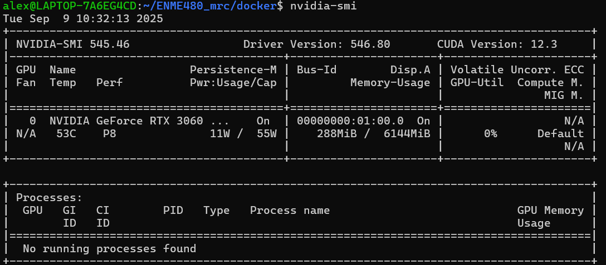
If you do not see an output like this you either don't have an Nvidia GPU or it is not set up correctly. You will not be able to complete the rest of these steps.
Getting the correct output from nvidia-smi means you have a Nvidia GPU installed in your computer with drivers properly configured. Now, we will enable the GPU within docker to speed up our simulations. First, run the following commands:
sudo touch /etc/docker/daemon.json
sudo chmod 777 /etc/docker/daemon.json
curl -fsSL https://nvidia.github.io/libnvidia-container/gpgkey | sudo gpg --dearmor -o /usr/share/keyrings/nvidia-container-toolkit-keyring.gpg \
&& curl -s -L https://nvidia.github.io/libnvidia-container/stable/deb/nvidia-container-toolkit.list | \
sed 's#deb https://#deb [signed-by=/usr/share/keyrings/nvidia-container-toolkit-keyring.gpg] https://#g' | \
sudo tee /etc/apt/sources.list.d/nvidia-container-toolkit.list
sed -i -e '/experimental/ s/^#//g' /etc/apt/sources.list.d/nvidia-container-toolkit.list
sudo apt-get update
export NVIDIA_CONTAINER_TOOLKIT_VERSION=1.17.8-1
sudo apt-get install -y \
nvidia-container-toolkit=${NVIDIA_CONTAINER_TOOLKIT_VERSION} \
nvidia-container-toolkit-base=${NVIDIA_CONTAINER_TOOLKIT_VERSION} \
libnvidia-container-tools=${NVIDIA_CONTAINER_TOOLKIT_VERSION} \
libnvidia-container1=${NVIDIA_CONTAINER_TOOLKIT_VERSION}
This will install the Nvidia container toolkit which allows Docker to use your GPU. With the container toolkit installed, we can now configure docker and compose our image:
echo $'{"runtimes": {"nvidia": {"path": "nvidia-container-runtime", "runtimeArgs": []}}}' > /etc/docker/daemon.json && sudo systemctl restart docker
This command will add a line to the settings file to enable running with the Nvidia GPU then resets Docker to reload the configuration.
Finally, this command will compose and run our image. This is the command you will want to run in order to get into the Docker and use ROS. Once it finishes you should see that the username in the terminal will have changed to "enme480_docker" to let you know that you are in the docker container. From now on, this is the command you will use to launch the docker image.
Tests for Week 2
To ensure everything is running sucessfully launch the following commands from within the Docker image:
This shouuld begin outputting a list of number to the terminal. Open a new terminal, enter the docer image and run: This second script should output the messages being sent by the talker.Test in New Terminal
🔧 Common Issues & Solutions
Boot Issues
| Problem | Solution |
|---|---|
| Grub not showing | Boot from USB, run sudo grub-install |
| Windows not in boot menu | Run sudo update-grub |
| Can't boot Windows | Use Windows recovery tools |
Graphics Issues
| Problem | Solution |
|---|---|
| Black screen | Boot with nomodeset kernel parameter |
| Low resolution | Install graphics drivers |
| No display | Check monitor connections |
Network Issues
| Problem | Solution |
|---|---|
| WiFi not working | Install proprietary drivers |
| Ethernet not working | Check cable and drivers |
| Slow internet | Update network drivers |
📱 Essential Ubuntu Commands
System Management
# Update package list
sudo apt update
# Upgrade packages
sudo apt upgrade
# Install package
sudo apt install package_name
# Remove package
sudo apt remove package_name
# Search packages
apt search keyword
# System info
lsb_release -a
uname -a
File Management
# List files
ls -la
# Change directory
cd directory_name
# Create directory
mkdir new_directory
# Copy files
cp source destination
# Move files
mv source destination
# Remove files
rm filename
Process Management
🎨 Customization (Optional)
Install Additional Software
# Media players
sudo apt install vlc
# Image editing
sudo apt install gimp
# Office suite
sudo apt install libreoffice
# Web browsers
sudo apt install firefox
Customize Desktop
- Change wallpaper: Right-click desktop → Change Background
- Install themes: Settings → Appearance
- Customize dock: Settings → Dock
- Add extensions: Ubuntu Software → Extensions
✅ Verification Checklist
- [ ] Ubuntu boots successfully
- [ ] System updates completed
- [ ] Essential tools installed
- [ ] Python environment configured
- [ ] Network working properly
- [ ] Graphics drivers installed
- [ ] System running smoothly
🆘 Getting Help
If Something Goes Wrong
- Check Ubuntu Forums: ubuntuforums.org
- Ask on Piazza: Course Q&A forum
- Office Hours: Get help from TA or instructor
- Ubuntu Documentation: help.ubuntu.com
Emergency Recovery
- Boot from USB and use "Try Ubuntu" mode
- Use Windows recovery if dual boot fails
- Reinstall Ubuntu as last resort
🚀 Next Steps
After completing Ubuntu setup:
- Install ROS 2: See ROS Setup Guide
- Configure Python: See Python Basics
- Set up Git: See Git Basics
- Install Gazebo: See Gazebo Setup
Last updated: Fall 2025 • Back to Resources